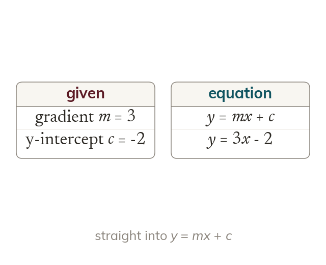

Gradient and intercept
A given gradient and y-intercept go straight into y = mx + c. Gradient 3 and intercept -2 give y = 3x - 2.
When the gradient and the y-intercept are given, they go straight into y = mx + c. A line with gradient 3 that crosses the y-axis at -2 has the equation y = 3x - 2.